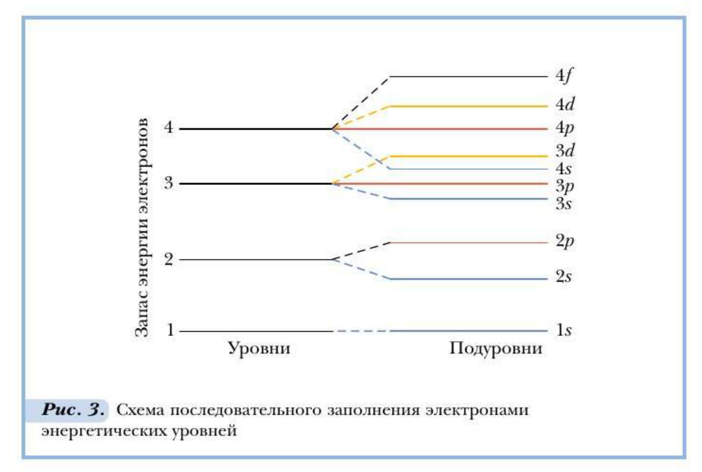

Глава 1. Особенности строения и свойств органических соединений
При изучении органической химии важно опираться не только на общие фундаментальные теории, законы и понятия химии. Необходимо учитывать особенности строения и проявления свойств, индивидуальность каждого изучаемого соединения. Единство всеобщего — особенного — индивидуального, взаимосвязь строения и свойств, генетические связи органических соединений разных классов и видов — таковы принципы, которых мы будем придерживаться при изучении органической химии. Для этого надо хорошо знать не только химическое, но также электронное и пространственное строение изучаемых веществ. На этой основе вы сможете предсказывать, моделировать и объяснять свойства и химические реакции органических соединений.
Состояние электрона в атоме
Прежде чем рассматривать электронное и пространственное строение органических соединений, ознакомимся с общим состоянием электронов в атоме. Создание электронной теории строения веществ стало возможным благодаря успехам физики конца ХПХ-ХХ в. в изучении явления радиоактивности, строения атомов, природы химической связи, а также в результате совершенствования методов и аппаратуры для исследования электронного строения атомов и веществ.
Свойства электронов описывают законами микромира. Экспериментально и теоретически установлено, что электроны, как микрочастицы, обладают двойственной природой, т. е. для них характерны свойства как частицы (имеют определённую массу, размеры и т. д.), так и волны (не имеют траектории движения, определённого положения в пространстве и обладают другими волновыми свойствами). Последнее вы узнаете из курса физики.

Электрон движется вокруг ядра с огромной скоростью, при которой его отрицательный заряд как бы размазывается в пространстве. При этом образуется зарядовое электронное облако неравномерной плотности, не имеющее чётких границ. Максимальная плотность отвечает наибольшей вероятности пребывания Рис. 2. Электронное облако электрона в данной области атомного атома водорода (1 им = 107 м) пространства. Пространство вокруг ядра атома, в котором наиболее вероятно нахождение электрона, называется атомной орбиталью.
Орбиталь включает около 90 % электронного облака. Здесь содержится преобладающая часть заряда и массы электрона.
Электронное облако атома водорода, орбиталь его электрона имеют сферическую форму. В атомах, содержащих большое число электронов, их орбитали имеют более сложную форму.
Графически атомную орбиталь изображают или в виде клетки, или горизонтальной чертой, а электрон — стрелкой.
Для описания состояния и движения электронов в атоме важное значение имеют четыре основные (орбитальные) характеристики.
Первая орбитальная характеристика — главное квантовое число n — отражает энергию электрона, нахождение его на определённом энергетическом уровне и его удалённость от ядра.
Вторая орбитальная характеристика - орбитальное квантовое число l - уточняет энергетическое состояние электрона в атоме и определяет форму его электронного облака.
Экспериментально установлено, что электроны одного уровня обладают близким, но всё же разным запасом энергии. Энергетический уровень расщепляется на подуровни, их количество соответствует номеру уровня, но не превышает четырёх. Первый энергетический уровень имеет один ($) подуровень, второй — два (5 и р), третий — три (5, р, 4) ит. д. (рис. 3). Электроны разных подуровней одного и того же уровня имеют разную форму электронного облака: сферическую, гантелеобразную и более сложную конфигурацию. Так, орбитали электронов, расположенных на первом энергетическом уровне, имеют форму сферы, на втором — орбитали электронов 5$-подуровня также имеют сферическую форму, а орбитали электронов р-подуровня имеют форму гантели и т. д. Более сложные формы атомных орбиталей в атомах с большим зарядом ядра менее выгодны для пребывания электронов, а потому заполняются ими тогда, когда 5-, а затем и р-орбитали электронного слоя будут уже заняты.
Третья орбитальная характеристика — магнитное квантовое число m — описывает положение электронного облака (орбитали) в пространстве.
Пространственное состояние электронного облака зависит от его формы. Чем она сложнее, тем больше разных положений оно будет иметь в пространстве. Так, 5-орбиталь имеет форму сферы, которая может занять лишь одно положение в пространстве, р-орбиталь — три, 4-орбиталь — пять пространственных положений (рис. 4). Энергетическая и пространственная характеристики электрона, его состояние и движение в атоме относительно его ядра позволяют дать второе определение орбитали.
Орбиталь — это совокупность положений электрона в атоме.